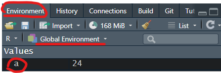

Chapter 3 基礎篇_R語言的基礎概念
3.1 物件基礎操作
3.1.1 指派（assignment）：
將資料儲存至一個代號（變項）內，
可以用”<-” 或”=“。但使用”<-“好過”=“(另外也可以換個方向指派”->“，但較少使用)
「<-」的 Windows快捷鍵: 「Alt+-」
# 將24存在「a」這個代號當中
a <- 24
a = 24
24 -> a
# 用print()函數將物件內容輸出
print(a)
## or 直接打物件名稱
a
# 用rm()函數移除物件
rm(a)
# 將a-10存在「b」這個代號當中(a 需要先被指派)
b <- a-10
## or
a-10 -> b
# 若a已經代表24，那麼b就會等於24-10=14
b若有指派a，則旁邊Environment -> Global Environment -> Values 就會出現a

3.2 基本運算
以下介紹簡單的運算方式，另外還有很多其他函數可以做基礎或進階的數學換算或運算，若有需要使用到可自行查找
3.2.1 數學基本運算
num1 <- 1
num2 <- 10
# 加 +
num1+num2 ## 1+10 = 11
# 減 -
num1-num2 ## 1-10 = -9
# 乘 *
num1*num2 ## 1*10 = 10
# 除 /
num1/num2 ## 1/10 = 0.1
# 餘數 %%
10%%3 ## 10除以3後所得餘數
# 次方 ^
10^2 ## 10的2次方 = 1003.2.2 邏輯運算
num1 <- 1
num2 <- 10
# 大於 >
num1 > num2 ## num1是否大於num2 -> FALSE
# 小於 <
num1 < num2 ## num1是否小於num2 -> TRUE
# 等於 ==，為了不與變數設定混淆，判斷兩變數是否相等，要用雙等號
num1 == num2 ## num1是否等於num2 -> FALSE
# 大於等於 >=
num1 >= num2 ## num1是否大於等於num2 -> FALSE
# 小於等於 <=
num1 <= num2 ## num1是否小於等於num2 -> TRUE
# 且 &
TRUE & TRUE ## TRUE
TRUE & FALSE ## FALSE
# 或 |
TRUE | TRUE ## TRUE
TRUE | FALSE ## TRUE
# 反向布林變數!
!TRUE ## 不等於TRUE 所以是 FALSE3.4 資料結構
3.4.1 向量(vectors):
單維的資料，單一類型
concatenate(堆疊): 以c(…)將「相同類型」值以「逗點」分隔而形成的向量
# 同樣是數字
c(1, 2 ,3)
c(c(1, 2), c(3, 4)) ## 等於c(1, 2, 3, 4)
# 同樣是文字
c("apple", "banana")
# 若文字中混數字會被自動當作文字
c("apple", "banana", 5) ## 等於c("apple, banana", "5") 3.4.2 因子(factor):
因子是由向量轉換而成，多用於表示「類別數據｣
例如有三種收入等級的類別，分別是低收入、中等收入、高收入， 使用方法為factor(資料向量,levels=類別次序)，levels參數可設定各類別的次序
# 原本是文字資料，設定類別
fac_1 <- factor(c("低收入", "中等收入", "高收入", "低收入"),
levels = c("低收入", "中等收入", "高收入"))
table(fac_1) ## 查看次數分配
# 原本是數字資料，設定類別
fac_2 <- factor(c(1, 2, 3, 1, 3),
levels = c(1, 2, 3),
labels = c("低收入", "中等收入", "高收入"))
table(fac_2) ## 查看次數分配
# 若是資料多了一個4沒有被設定類別 -> 被當成缺失值
fac_3 <- factor(c(1, 2, 3, 1, 3, 4),
levels = c(1, 2, 3),
labels = c("低收入", "中等收入", "高收入"))
table(fac_3) ## 查看次數分配3.4.3 清單(list):
可以包含向量、矩陣、不同的清單，可以包含「不同的資料類型」。
通常統計跑完後，結果會儲存在清單之中
num_list <- c(3, 4, 5)
char_list <- c("a", "b")
logic_list <- c(TRUE, TRUE, FALSE)
out_list_1 <- list(num_list, char_list, logic_list, 3)
## or
out_list_3 <- list(
c(3, 4, 5),
c("a", "b"),
c(TRUE, TRUE, FALSE),
3
)
## or 給予名稱
out_list_2 <- list(
num_list = c(3, 4, 5),
char_list = c("a", "b"),
logic_list = c(TRUE, TRUE, FALSE),
3
)3.4.4 矩陣(matrices):
二維的資料，單一類型
mat_1 <- matrix(1:4, nrow = 2, ncol = 2)
mat_2 <- matrix(1:9, nrow = 3, ncol = 3)3.4.5 陣列(array):
多維度的資料，單一類型
vec_1 <- c(1, 2, 4)
vec_2 <- c(15, 17, 27, 3, 10, 11)
output <- array(c(vec_1, vec_2), dim = c(3, 3, 2))3.4.6 資料架構(data.frame)：
像是我們用的套裝統計軟體（如excel, spss, stata）中資料儲存的方式。 每一欄（Column）儲存不同的資料、每一列（Row）代表不同的觀察值
num_list <- c(3, 4, 5)
char_list <- c("a", "b", "c")
logic_list <- c(TRUE, FALSE, TRUE)
# 使用data.frame()來創建新的資料框
data_frame <- data.frame(num_list, char_list, logic_list)
# 或是將list 轉成data.frame
data_list <- list(
num_list, char_list, logic_list
)
data_list <- as.data.frame(data_list)3.4.7 查詢資料型態或結構
- Type: 是查看電腦如何儲存資料，物件的基本型態
- Class: 是查看物件的類別(螢幕顯示的型態)，及能對它進行的操作所做的分類
# type
typeof(c("John", "Mary")) ## "character"
typeof(c(2, 3.1412)) ## "double"
typeof(c(TRUE, TRUE, F)) ## "logical"
# class
class(c("John", "Mary")) ## "character"
class(c(2, 3.1412)) ## "numeric"
class(c(TRUE, TRUE, F)) ## "logical"3.4.8 轉換資料型態或結構
使用as.targetClass將值轉換為targetClass類。
as.numeric()將值轉換為數字類as.character()將值轉換為字符類- 其他轉換……
num_t1 <- c(0.1, 2 , 4)
char_t1 <- c("0.1", "2", "4")
num_t2 <- as.character(num_t1)
char_t2 <- as.numeric(char_t1)
class(num_t1) ## "numeric"
class(num_t2) ## "character"
class(char_t1) ## "character"
class(char_t2) ## "numeric"3.5 簡單條件判斷式
3.5.1 if-else敘述
- 邏輯判斷: if-else敘述 若if後所接邏輯判斷為真(TRUE)，就會執行if下方之程式碼，若為偽(FALSE)，則執行else下方之程式碼，若程式中沒有else片段，則不執行任何程式碼。
#舉例來說，若考試分數大於等於60分，則印出及格字樣，
#小於60分則印出不及格字樣，程式範例如下
score <- 59
if(score >= 60){
print("及格")
}
if(score >= 60){
print("及格")
}else{
print("不及格")
}- 多重邏輯判斷: if-else if-else
score <- 95
if(score >= 90){
print("優秀")
}else if(score >= 60){
print("及格")
}else{
print("不及格")
}- 邏輯判斷簡化: ifelse
ifelse()函數可用最短的方式取代if-else敘述，
使用方法為ifelse(邏輯判斷, 判斷為真要執行的程式碼, 判斷為偽要執行的程式碼)
score <- 80
ifelse(score >= 60, "及格", "不及格")
ifelse(score >= 90, "優秀",
ifelse(score >= 60, "及格", "不及格"))3.6 管道控制pipe
在語法操作上，很常需要對於同一個變項進行重複操作，在此magrittr套件提供了一些可以讓程式更容易查看、理解的語法，而在R版本4.1.0後也有提後一個內建的符號來進行，以下對此作簡單介紹，後續資料處理的章節會較常使用到 參考1、參考2
3.6.1 |> & %>%
|>為內建的連結符號，目的是要將符號左側的變項連結(放入使用)到符號右邊的函數 %>%是magrittr套件中的其中一個管道，其使用方法大致與|>一模一樣
library(magrittr)
# 有個函數f()，想在函數當中放入x
## 方法1
f(x)
## 方法2
x |> f() # 視為將x用於(放入)f()函數當中
x %>% f()
# 有個函數g()，考可以放入兩個參數，想在函數當中放入x
## 方法1
g(x, y)
## 方法2
x |> g(y)
x %>% g(y)
# 管道也可以連續使用
x |> f(x) |> g(y)
x %>% f(x %>% g(y)
## 等於
g(f(x), y)